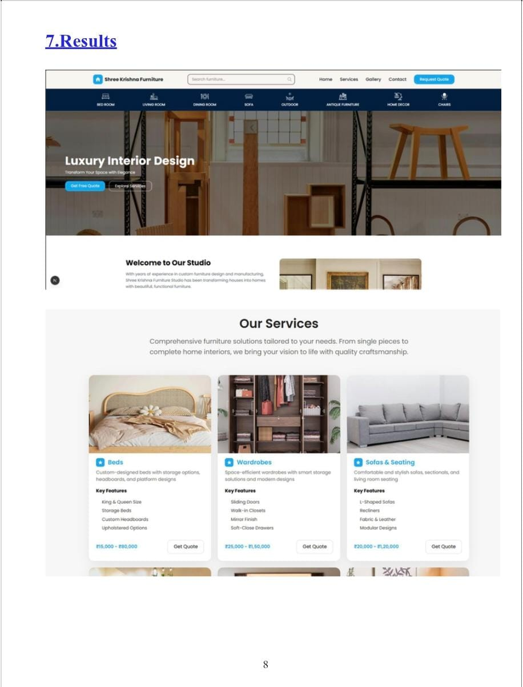
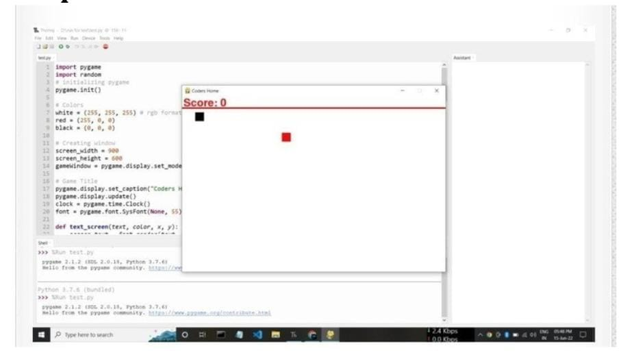
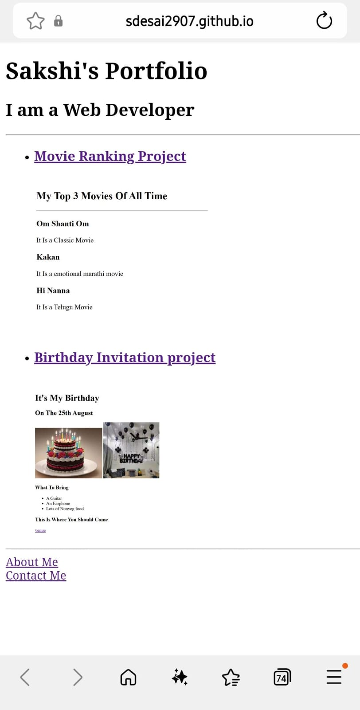

Sakshi Virendra Desai
Contact:9699772596
Email:sakshid29072005@gmail.com
Linkedin: abc
Github: SDesai2907
City: Pune
Summary
Engineering student fascinated by coding and the way technology works,with a strong interest in learning new technologies and building innovative projects.Eager to apply technical knowledge,develop practical solutions,and create impactful projects while continuously improving my skills.
Education
B.Tech in Computer Science
College: Sinhgad College of Engineering Pune
Year: 2023-2027
CGPA: 7.14/10
Skills
- Programming Languages: Python, Java
- Web Development: HTML, CSS, JavaScript
- Database Management: MySQL
- Tools:GitHub,VS code,AI
- Concepts:DSA,DBMS,Computer Networks,Information Security
Certifications
- Amazon Web Services (AWS) Certification
- Microsoft Certified: Azure Fundamentals
- Full Stack Web Development--Udemy
Projects
- Project Name:AI-Enhanced E-commerce Website
Description: Developed a fully functional e-commerce website using HTML, CSS, and JavaScript. Implemented features such as product listing, shopping cart, and user authentication.
Technologies Used: HTML, CSS, JavaScript

-
Project Name: Snake and Ladder Game
Description: Developed a classic Snake and Ladder game using Python and Pygame library. The game features a graphical interface and implements the complete game logic.
Technologies Used: Python, Pygame

- Project Name: Personal Portfolio Website
Description: Created a personal portfolio website to showcase my projects and skills. The website is responsive and includes sections for about me, projects, and contact information.
Technologies Used: HTML, CSS, JavaScript

Internships
- Internship Name: Web Development Intern at ITS pvt.limited
Project: SKYLINE CRM
Role: Developed and maintained web applications, contributed to the design and implementation of new features.
Description: Assisted in the development of web applications, collaborated with the team to implement new features, and gained hands-on experience in front-end and back-end development.
Duration: 2 months
Technologies Used: HTML, CSS, JavaScript, MySQL
Presentation
Achievements
- Recognized for outstanding performance during the internship at ITS pvt.limited.
- Good Player In CodinGame
- Visharad Poorna in Bharatnatyam
- Participant in the State Level Handball Selection
- Part of Arts Club in College
Soft Skills
- Strong problem-solving and analytical skills
- Effective teamwork abilities
- Adaptability and willingness to learn new technologies
- Time management and organizational skills
- Creativity and innovation in project development
Languages
- English: Fluent
- Hindi: Fluent
- Kannada: Basic
- Marathi: Fluent
Links